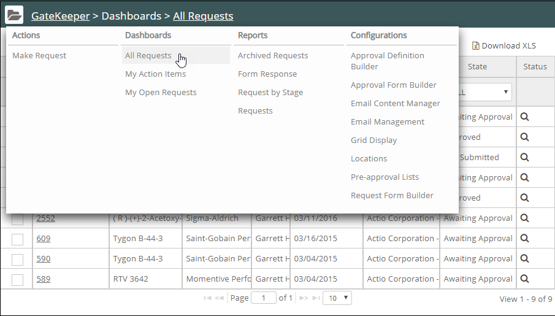
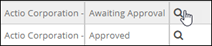
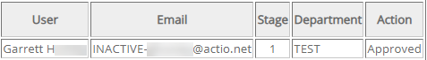
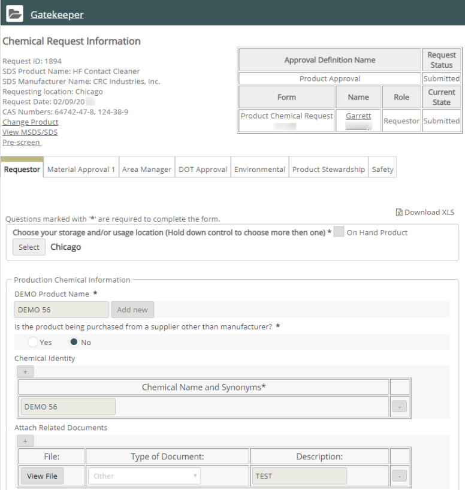
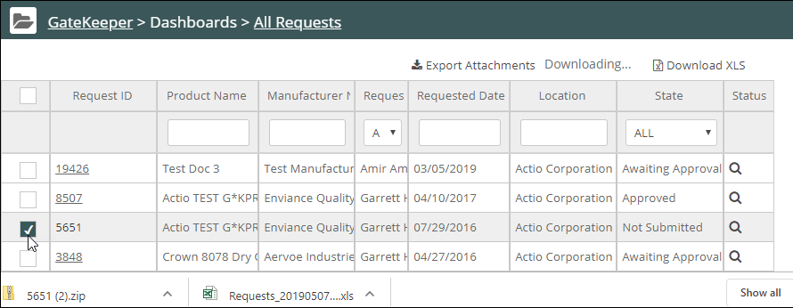

You can view product requests and track their status from the Gatekeeper dashboards.
To view requests:
Click the Gatekeeper Main Menu. From Dashboards, select the desired dashboard filter.
All Requests shows all requests made for the location.
My Action Items shows requests awaiting your input as an approver.
My Open Requests shows requests you have submitted.

Apply any desired filters using the filter boxes at the top of the columns.
To view request status details, click the search icon in the Status column.

The status details include the requestor, requestor's email, and status for each required approval.

To view the full request information, click the Request ID.

Available actions, depending on your permissions, are shown at the bottom of the form.
The On Hold button indicates if the request is on hold. If it is on hold, editing will be disabled. Only the Approver or Backup Approver may put the request on or take it off On Hold.
To return to the request list, click Previous Page.
You can download your requests and approvals to an Excel spreadsheet. General users can download information from any tab for requests they initiated. Admin users may download all requests and approval forms.
To download requests and approval forms to an Excel spreadsheet:
Click Export to Excel in the form.
The information in that form, along with the forms for any preceding stages, will be downloaded.
To download all forms, click the Export to Excel button in the last approval form.
The All Requests page shows a list of all requests for the location (depending on your permissions). You may apply a filter to search for requests, then click the Request ID to view request information.
You may also download a list of requests.
To download a list of requests:
From the Dashboards list, select All Requests.
Apply any desired filters using the filter boxes at the top of the columns.
Select Download XLS.
The list of requests with the information shown in the grid will be downloaded to an Excel file.
You can download attachments for a single request (including an original SDS attached to the request, if present).
To download attachments for a request:
From the All Requests list, select the checkbox for a request and click Export Attachments.
Only one item at a time may be selected for attachment export.
